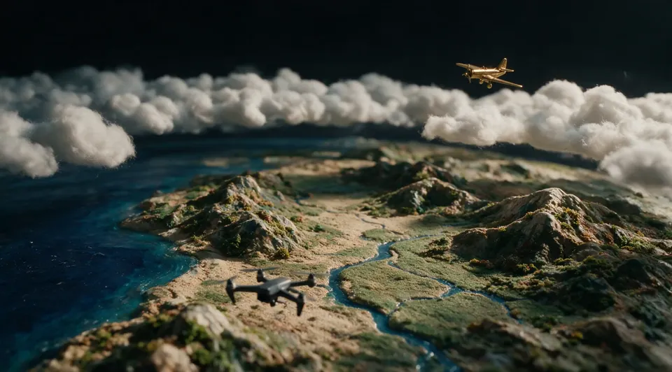
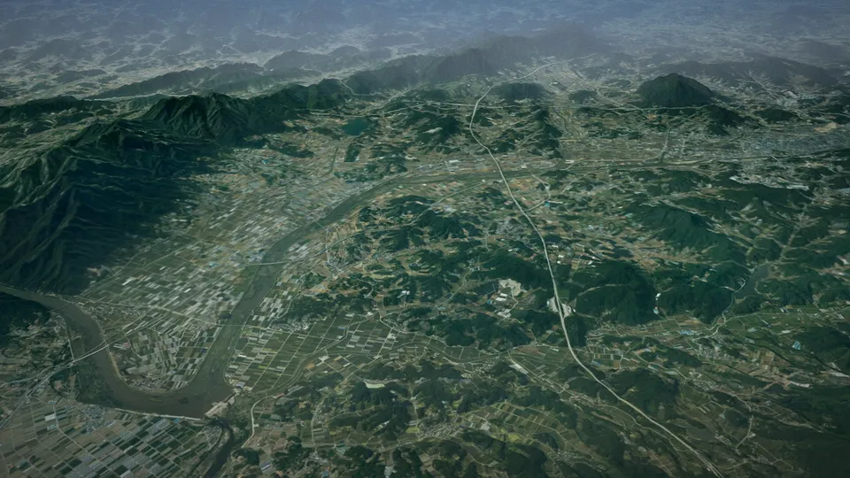
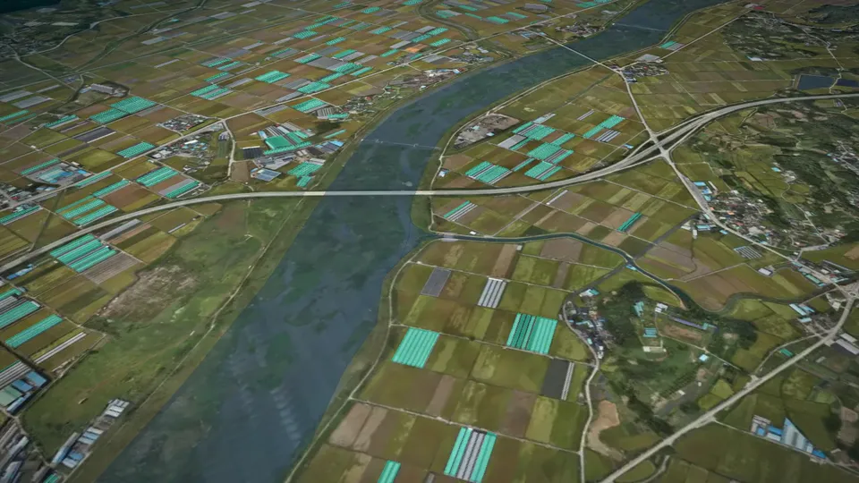
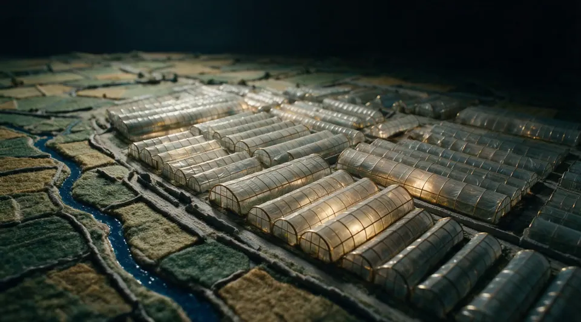
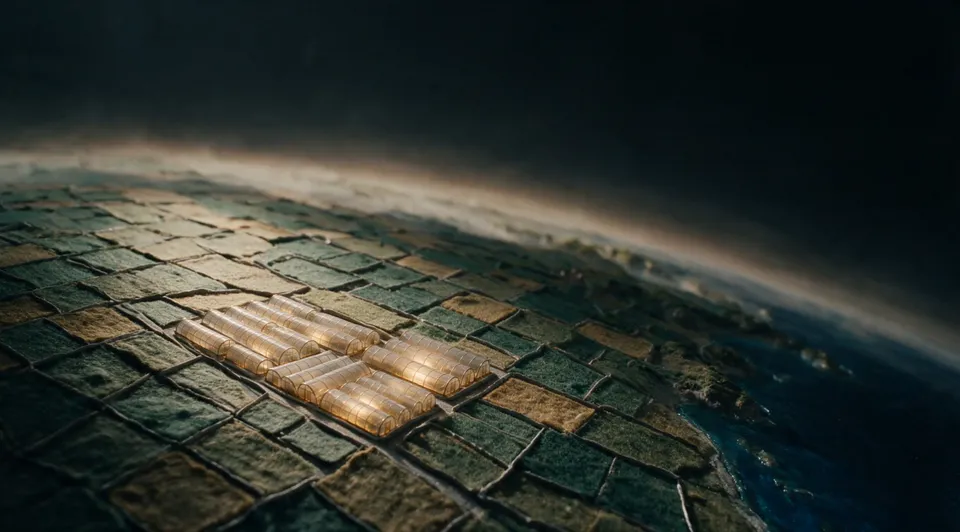
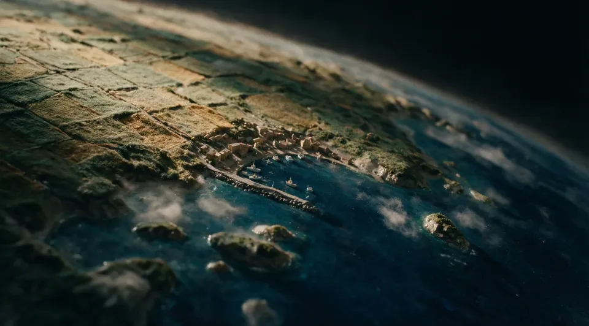
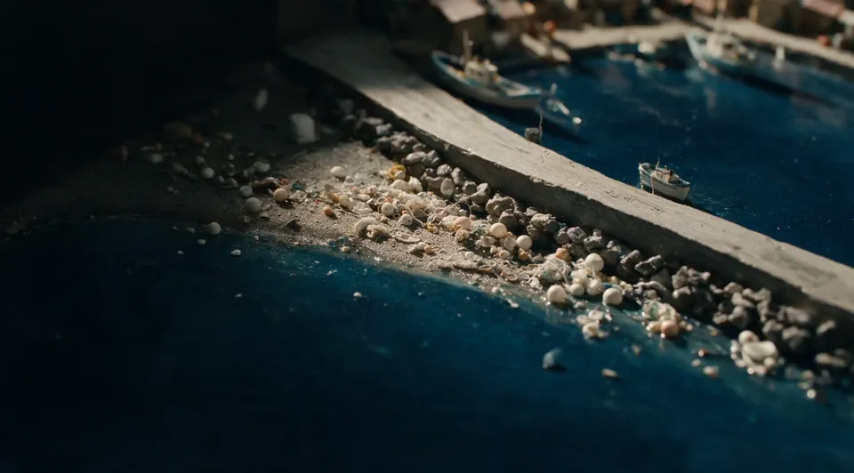
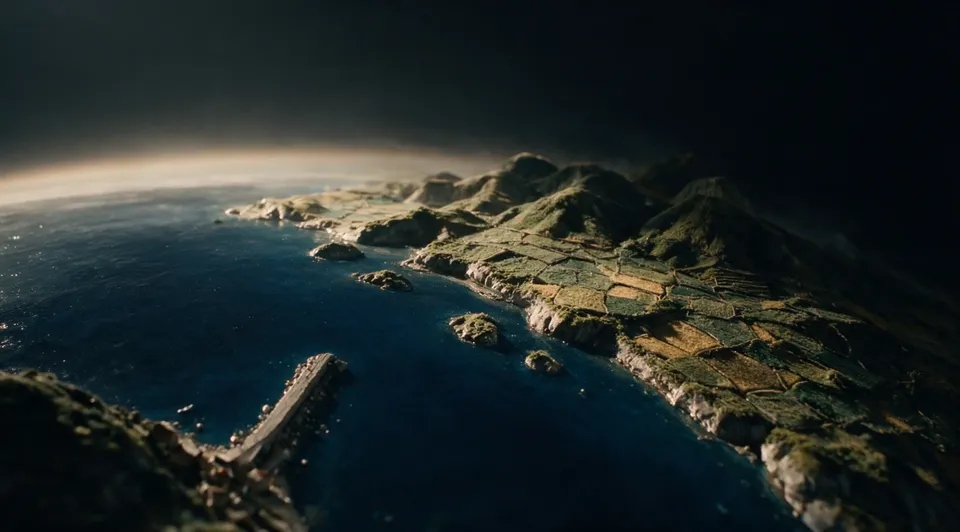

01 · 궤도 · 모형 지구본
국토는 매일
조금씩 달라진다
궤도에서 한 필지까지








01 · 궤도 · 모형 지구본
궤도에서 한 필지까지
02 · 하강 · 구름 · 항공기
범부처 AI 기반 국토정보 통합조사
대한민국 · 15개 조사 · 6개 부처
03 · 드론 이동 · 지리산 → 남원
위성 2 m · 항공 25 cm · 드론 1 cm
04 · 남원 평야 · 농지이용
농지이용 현황 2,098필지 · 경작 1,291 / 비경작 807 · 2025 드론
05 · 비닐하우스 실태 · 남원 농경지
비닐하우스 0동 · 0필지
namwon-greenhouse-2025 · 항공 정사영상 2025-10 · GSD 25 cm
인계 · 남원
남원 전역 · 127.4250, 35.4290 · ALT 52.4 km · 검출 9,664동
06 · 상승 · 남원 상공
06b · 지구본 이동 · 남원 → 여수
07 · 여수 해안 · 해양쓰레기
해양쓰레기 항공 0건 · 드론 0건 · 8종
인계 · 여수
여수 국동항 · 127.7305, 34.5630 · ALT 0.3 km · 검출 1,857건
08 · 상승 · 여수 상공
08b · 지구본 이동 · 여수 → 울주
다음 · 울주 산림 → 귀환
울주 산지 · 129.1500, 35.5500 · ALT 4.5 km · 레그 09–12 예정